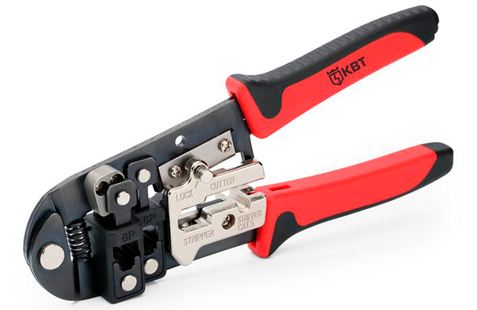

Кримпер
Кримпер — электромонтажный инструмент, предназначенный для соединения проводов между собой или с контактами разъёма при электромонтажных работах без применения пайки или сварки.
Технология соединения проводов опрессовкой
Опрессовка проводов используется в процессе подготовки многожильных проводов для винтовых или клеммных соединений, для соединения многожильных и одножильных проводов между собой и для установки на провод наконечника, предназначенного для монтажа в разъем. Соединение проводов методом опрессовки считается преимущественным, по сравнению с пайкой, особенно для открытых электрических схем, и более технологичным по сравнению со сваркой. В целях исключения гальванической пары, для опрессовки медных проводов используются медные наконечники и гильзы, для алюминиевых — алюминиевые.
Наконечники для опрессовки многожильных проводов выпускаются различных типов:
- Наконечник цилиндрической формы втулочный (гильза). Наконечник применяется для подготовки зачищенных от изоляции концов многожильного провода к монтажу в винтовую клеммную колодку. Наконечник предотвращает отделение проводников многожильного провода и предотвращает их повреждение и обрыв. Втулочные наконечники изготавливаются из меди или алюминия, представляют собой отрезок тонкостенной трубки и нередко снабжаются пластиковой цветной вставкой, облегчающей процесс установки и позволяющей выполнить цветовую маркировку. Для опрессовки такого типа наконечников используется специализированный кримпер сегментного типа.
- Наконечник петлевой типа «О». Наконечник используется для подготовки зачищенных от изоляции концов многожильного провода к монтажу в винтовой клеммник. Винт клеммника проходит сквозь отверстие в наконечнике, и для монтажа требуется полностью вывинтить винт из клеммника. Такой тип наконечника предотвращает отсоединение проводов даже при ослаблении винтов крепления. Для опрессовки используются специализированные или универсальные клещи.
- Наконечник вилочный типа «U». Наконечник используется для подготовки зачищенных от изоляции концов многожильного провода к монтажу в винтовой клеммник. Винт проходит в прорезь наконечника, и для монтажа требуется ослабить винтовое соединение, достаточно для установки в клеммник. Такой тип наконечника упрощает процесс монтажа проводов в клеммник. Для опрессовки используются специализированные или универсальные клещи.
- Наконечник ножевой для ножевого разъёма. Наконечник используется для подготовки зачищенных от изоляции концов многожильного провода к монтажу в ножевой разъём. Такого типа разъёмы используются в автомобильной электрике и силовой электронике, везде, где требуется недорогое надёжное соединение отдельных проводов. Для опрессовки такого типа наконечников используются специализированные или универсальные клещи.
- Специальные наконечники для установки в разъём. Большое количество разъёмов различных производителей подразумевают последовательность сборки, состоящую из нескольких этапов. Первый этап — зачистка провода и установка на него наконечника. Второй этап — сборка проводов с наконечниками в разъём. Наконечники, используемые в разъёмах, уникальны для каждого типа разъёма и требуют использования специального типа инструмента в большинстве случаев.
- Соединительные гильзы для соединения проводов между собой. Для соединения проводов опрессовкой используются медные или алюминиевые толстостенные трубки (гильзы). Два или более концов провода вставляются в гильзу и обжимаются специальным кримпером или универсальными клещами. Соединительные гильзы выпускаются неизолированными и с изолирующей пластиковой оболочкой. Прочность оболочки позволяет выполнять обжим соединения, не снимая оболочку.
- Наконечники штифтовые, флажковые, кольцевые, крючкообразные и другой формы для опрессовки на кабель выпускаются для удобства монтажа в установочные изделия различной электрораспределительной арматуры
Типы кримперов
В связи с разнообразием наконечников, устанавливаемых прессованием, существует большое количество универсальных, специализированных, ручных, автоматических и полуавтоматических кримперов для установки наконечников.
Автоматические кримперы
Высокопроизводительное оборудование для обработки проводов позволяет зачищать провод, устанавливать наконечник и выполнять обжим в автоматическом и полуавтоматическом режимах. Такое оборудование состоит из электрического пресса и кримперной оснастки (аппликатора). Аппликаторы выпускается для каждого типа наконечников отдельно. Аппликаторы могут выполнять операцию только обжима или обрезку, зачистку и обжим наконечника за один удар.
Ручной инструмент
Ручной инструмент, в зависимости от размеров и типа контактов или наконечников, выпускается в виде универсальных клещей, специализированных ручных кримперов, электрических, пиротехнических и гидравлических переносных прессов.